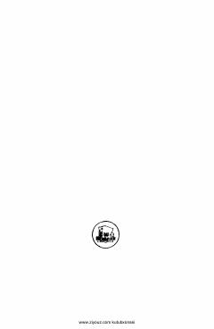

ASPirimqul Qodirovning qissa va hikoyalardan iborat sara asarlar to'plami.
Ushbu kitob taniqli yozuvchi Pirimqul Qodirovning «Akramning sarguzashtlari» nomli qissasi va turli hikoyalarini o'z ichiga oladi. Asarlarda insoniy munosabatlar, tabiyot go'zalliklari va hayotiy muammolar badiiy tilda ochib berilgan.